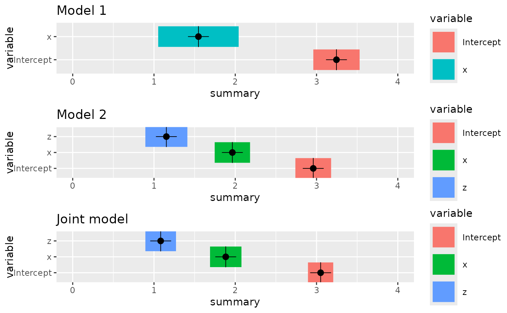

Observation model construction for usage with bru()
Usage
like(
formula = . ~ .,
family = "gaussian",
data = NULL,
response_data = NULL,
mesh = deprecated(),
E = NULL,
Ntrials = NULL,
weights = NULL,
scale = NULL,
domain = NULL,
samplers = NULL,
ips = NULL,
include = NULL,
exclude = NULL,
include_latent = NULL,
used = NULL,
allow_latent = deprecated(),
allow_combine = NULL,
control.family = NULL,
options = list(),
.envir = parent.frame()
)
like_list(...)
# S3 method for class 'list'
like_list(object, envir = NULL, ...)
# S3 method for class 'bru_like'
like_list(..., envir = NULL)
# S3 method for class 'bru_like'
c(..., envir = NULL)
# S3 method for class 'bru_like_list'
c(..., envir = NULL)
# S3 method for class 'bru_like_list'
x[i]Arguments
- formula
a
formulawhere the right hand side is a general R expression defines the predictor used in the model.- family
A string identifying a valid
INLA::inlalikelihood family. The default isgaussianwith identity link. In addition to the likelihoods provided by inla (seenames(INLA::inla.models()$likelihood)) inlabru supports fitting latent Gaussian Cox processes viafamily = "cp". As an alternative tobru(), thelgcp()function provides a convenient interface to fitting Cox processes.- data
Likelihood-specific data, as a
data.frameorSpatialPoints[DataFrame]object.- response_data
Likelihood-specific data for models that need different size/format for inputs and response variables, as a
data.frameorSpatialPoints[DataFrame]object.- mesh
Deprecated.
- E
Exposure parameter for family = 'poisson' passed on to
INLA::inla. Special case if family is 'cp': rescale all integration weights by a scalar E. For sampler specific reweighting/effort, use aweightcolumn in thesamplersobject, seefmesher::fm_int(). Default taken fromoptions$E, normally1.- Ntrials
A vector containing the number of trials for the 'binomial' likelihood. Default taken from
options$Ntrials, normally1.- weights
Fixed (optional) weights parameters of the likelihood, so the log-likelihood
[i]is changed intoweights[i] * log_likelihood[i]. Default value is1. WARNING: The normalizing constant for the likelihood is NOT recomputed, so ALL marginals (and the marginal likelihood) must be interpreted with great care.- scale
Fixed (optional) scale parameters of the precision for several models, such as Gaussian and student-t response models.
- domain, samplers, ips
Arguments used for
family="cp".domainNamed list of domain definitions.
samplersIntegration subdomain for 'cp' family.
ipsIntegration points for 'cp' family. Defaults to
fmesher::fm_int(domain, samplers). If explicitly given, overridesdomainandsamplers.
- include, exclude, include_latent
Arguments controlling what components and effects are available for use in the predictor expression.
includeCharacter vector of component labels that are used as effects by the predictor expression; If
NULL(default), thebru_used()method is used to extract the variable names from the formula.excludeCharacter vector of component labels to be excluded from the effect list determined by the
includeargument. Default isNULL; do not remove any components from the inclusion list.include_latentCharacter vector. Specifies which latent state variables are directly available to the predictor expression, with a
_latentsuffix. This also makes evaluator functions with suffix_evalavailable, taking parametersmain,group, andreplicate, taking values for where to evaluate the component effect that are different than those defined in the component definition itself (seecomponent_eval()). IfNULL, thebru_used()method auto-detects use of_latentand_evalin the predictor expression.
- used
Wither
NULL(default) or abru_used()object, that overrides theinclude,exclude,include_latentarguments. WhenusedisNULL(default), the information about what effects and latent vectors are made available to the predictor evaluation is defined byused <- bru_used( formula, effect = include, effect_exclude = exclude, latent = include_latent )- allow_latent
![[Deprecated]](figures/lifecycle-deprecated.svg) logical, deprecated.
Use
logical, deprecated.
Use include_latentinstead.- allow_combine
logical; If
TRUE, the predictor expression may involve several rows of the input data to influence the same row. DefaultFALSE, but forced toTRUEifresponse_datais non-NULL,datais alist, or the likelihood construction requires it.- control.family
A optional
listofINLA::control.familyoptions- options
A bru_options options object or a list of options passed on to
bru_options()- .envir
The evaluation environment to use for special arguments (
E,Ntrials,weights, andscale) if not found inresponse_dataordata. Defaults to the calling environment.- ...
For
like_list.bru_like, one or morebru_likeobjects- object
A list of
bru_likeobjects- envir
An optional environment for the new
bru_like_listobject- x
bru_like_listobject from which to extract element(s)- i
indices specifying elements to extract
Value
A likelihood configuration which can be used to parameterise bru().
Methods (by generic)
like_list(bru_like): Combine severalbru_likelikelihoods into abru_like_listobjectc(bru_like): Combine severalbru_likelikelihoods and/orbru_like_listobjects into abru_like_listobject
Functions
like_list(): Combinebru_likelikelihoods into abru_like_listobjectlike_list(list): Combine a list ofbru_likelikelihoods into abru_like_listobjectc(bru_like_list): Combine severalbru_likelikelihoods and/orbru_like_listobjects into abru_like_listobject
Examples
# \donttest{
if (bru_safe_inla() &&
require(ggplot2, quietly = TRUE)) {
# The like function's main purpose is to set up models with multiple likelihoods.
# The following example generates some random covariates which are observed through
# two different random effect models with different likelihoods
# Generate the data
set.seed(123)
n1 <- 200
n2 <- 10
x1 <- runif(n1)
x2 <- runif(n2)
z2 <- runif(n2)
y1 <- rnorm(n1, mean = 2 * x1 + 3)
y2 <- rpois(n2, lambda = exp(2 * x2 + z2 + 3))
df1 <- data.frame(y = y1, x = x1)
df2 <- data.frame(y = y2, x = x2, z = z2)
# Single likelihood models and inference using bru are done via
cmp1 <- y ~ -1 + Intercept(1) + x
fit1 <- bru(cmp1, family = "gaussian", data = df1)
summary(fit1)
cmp2 <- y ~ -1 + Intercept(1) + x + z
fit2 <- bru(cmp2, family = "poisson", data = df2)
summary(fit2)
# A joint model has two likelihoods, which are set up using the like function
lik1 <- like("gaussian", formula = y ~ x + Intercept, data = df1)
lik2 <- like("poisson", formula = y ~ x + z + Intercept, data = df2)
# The union of effects of both models gives the components needed to run bru
jcmp <- ~ x + z + Intercept(1)
jfit <- bru(jcmp, lik1, lik2)
# Compare the estimates
p1 <- ggplot() +
gg(fit1$summary.fixed, bar = TRUE) +
ylim(0, 4) +
ggtitle("Model 1")
p2 <- ggplot() +
gg(fit2$summary.fixed, bar = TRUE) +
ylim(0, 4) +
ggtitle("Model 2")
pj <- ggplot() +
gg(jfit$summary.fixed, bar = TRUE) +
ylim(0, 4) +
ggtitle("Joint model")
multiplot(p1, p2, pj)
}

# }